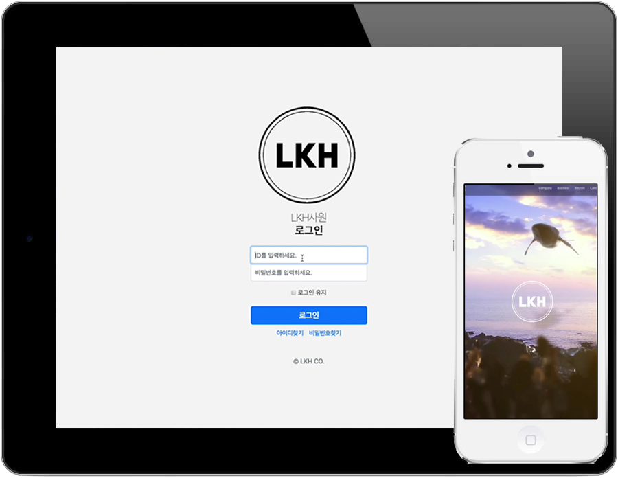

Skills MY SKILLS
- HTML 5 기본 태그 활용가능
- 기본 CSS 사용가능
- 웹 접근성
- Java 1.8 사용 기본문법 및 이해
- JSP / Servlet 기본문법 이해 및 활용
- Spring Framework 기본문법 이해 및 활용
- 기본 SQL 퀴리 작성 가능
- 웹과 데이터 베이스 연동가능
- JQuery 이벤트
- JavaScript와의 연관성이해
- JavaScript 기본 문법의 이해 및 활용가능
- JavaScript 함수기능 구현가능
- AJAX
Intro 저를 소개합니다.
웹 시장에 처음 발디딤을 시작하는 개발자 김혜린입니다.
‘호기심과 경험, 그리고 응용’
저는 호기심이 많은 성격입니다. 현재 21세기는 새로운 먹거리, 새로운 트렌드, 신작영화, 신작드라마, 신곡 등 재밌고 흥미로운 것들이 끊임없이 쏟아지고 발전하고 있습니다. 그렇기 때문에 새로운 것들을 두려워하지 않고 도전하며 그렇게 쌓아온 다양한 경험은 제 안에 빅데이터가 되어 여러 가지 상황에 대응할 수 있는 큰 자산이 된다고 생각합니다.
‘파트타이머에서 정식직원으로 캐스팅’
저의 20대는 서비스직으로 시작해 서비스직으로 마무리를 지었고, 덕분에 제 인생을 더욱 풍부하게 해줄 다양한 사회경험을 쌓았습니다. 논리적으로 상황판단을 한 후, 체계적으로 일처리를 수행한 덕분에 학교와 병행하면서 일했던 카페에서는 졸업한 후 파트타이머에서 정식으로 직원을 제의받았습니다. 수많은 상황들과 그때마다 조리있게 판단한 상황판단력으로 다져진 저의 논리적인 사고흐름은 귀사에 꼭 도움이 될 것이라고 생각합니다.
‘My way and Love myself’
개발자의 길로 들어서기까지 그 과정들은 결코 쉬운 길은 아니었습니다. 제가 원한 길이 아님을 인지하고 오류를 잡기까지 다소 많이 시간이 걸렸지만, 자바 양성과정을 훈련하면서 코드를 작성하고 오류를 수정하고 결과물을 산출하는 과정이 정말 행복했습니다. 앞으로 나올 최신기술들을 끊임없이 연구하여 가장 효율적인 방법으로 도움이 되도록 하겠습니다.
Portfolio
